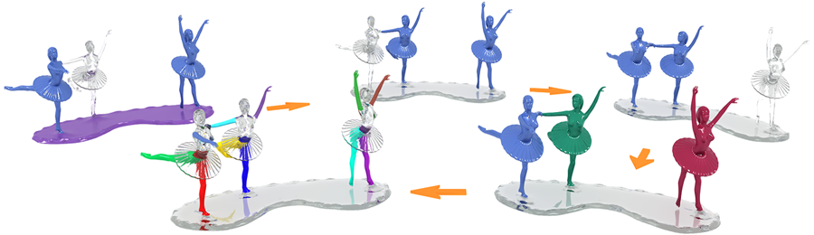

Multi-Scale Partial Intrinsic
Symmetry Detection
Kai Xu1,2,
Hao Zhang3, Wei Jiang1,
Ramsay Dyer4, Zhiquan Cheng1, Ligang Liu5, Baoquan Chen2
1National
University of
Defense Technology, 2Shenzhen
VisuCA Key
Lab/SIAT,
3Simon
Fraser University, 4INRIA,
Geometrica, 5University of Science
and Technology of China
ACM Transactions
on Graphics (SIGGRAPH Asia 2012), 31(6)

Figure 1: Multi-scale
partial intrinsic symmetry detection: five symmetry scales (large to
small) are detected. Each symmetric region is shown in uniform color.
Note the detection of inter- and intra-object symmetries, as well as
cylindrical symmetry of the limbs.
|
Abstract
|
We present an algorithm for
multi-scale partial intrinsic symmetry detection over 2D and 3D shapes,
where the scale of a symmetric region is defined by intrinsic distances
between symmetric points over the region. To identify prominent
symmetric regions which overlap and vary in form and scale, we decouple
scale extraction and symmetry extraction by performing two levels of
clustering. First, significant symmetry scales are identified by
clustering sample point pairs from an input shape. Since different
point pairs can share a common point, shape regions covered by points
in different scale clusters can overlap. We introduce the symmetry
scale matrix (SSM), where each entry estimates the likelihood two point
pairs belong to symmetries at the same scale. The pair-to-pair symmetry
affinity is computed based on a pair signature which encodes scales. We
perform spectral clustering using the SSM to obtain the scale clsters.
Then for all points belonging to the same scale cluster, we perform the
second-level spectral clustering, based on a novel point-to-point
symmetry affinity measure, to extract partial symmetries at that scale.
We demonstrate our algorithm on complex shapes possessing rich
symmetries at multiple scales.
|
|
|
Paper |
|
|
|
Slides |
|
|
|
| Images |
Figure
2: Outline of our multi-scale symmetry detection algorithm.
After a voting step which identifies a set of (sufficiently) symmetric
sample point pairs (a), we perform clustering of these point pairs
based on a scale-aware affinity matrix (the SSM) to determine scale
clusters. In each scale cluster, we perform the second-level clustering
of sample points to detect symmetries at that scale (c-d).
Figure
3: Symmetry detection on 2D shapes sorted by scale. Observe the
inter- and intra-object symmetries detected at multiple scales, even
down to the small scales of the limbs in (d).
Figure
4: A gallery of 3D symmetry detection results sorted by scale.
From left to right and top-down: Children, Octopus, Kung Fu Panda,
IndoLady, and Thai Statue. The last two models show raw clustering
results. The IndoLady and Thai Statue models were chosen to demonstrate
the performance of our algorithm on models which are not compositions
of articulated characters. For the children model, not all arms or legs
are detected in the last shown scale due to scale discrepancies and
some parts fused with the body. For the IndoLady, our method does not
return all perceived symmetries, e.g., the self-symmetries of the
individual limbs. To save space, the first image for the Kung Fu Panda
contains the first five scales, each revealing a self-symmetry of the
four characters and the base.
Figure
5:
Comparison between our multi-scale results (a) to the symmetry
detection results of [Lipman et al. 2010] (b) and [Xu et al.
2009] (c), which both provide only a single coverage of the shape. Our
method detects overlapping symmetries and these results combine those
from the other two methods.
Figure
6: Plots of the top two eigenvectors of Global Point Signature
(a-b), Heat Kernel Signature (c-d), and our partial intrinsic SCM in
two scales (e-h). The partial intrinsic symmetries are more clearly
revealed in (e-h).
Figure
7: Comparison between our symmetry-driven hierarchical
segmentation scheme (top row) and hierarchical segmentation based on
primitive fitting [Attene et al. 2006] (middle row) and normalized cut
[Golovinskiy and Funkhouser 2008] (bottom row). Each column shows the
same segmentation count. It is evident that our results conform better
to the shape semantics.
Figure
8: Limitation to the use of intrinsic distances (a 2D case).
Having one foot of the right figure planted into the base (a) or
disconnected from the base (b) has a drastic effect on the multi-scale
symmetries detected, since the distances changed drastically.
|
|
|
| Thanks |
We
would first like to thank the
anonymous reviewers for their valuable feedback. Thanks also go to
Daniel Cohen-Or for fruitful discussions on the paper. Part of the 3D
models in this paper is from the shape repositories of AIM@SHAPE and
Stanford. This work is
supported in part by grants from NSFC (61202333, 61232011, 61161160567,
61025012, 61103084, and 61070071), NSERC (No. 611370), National 863
Program (2011AA010503), Shenzhen Science and Innovation Program
(CXB201104220029A, JC201005270329A), the 973 National Basic Research
Program of China (2011CB302400).
|
|
|
| Data |
We provide the datasets (including
both 2D and 3D shapes) used in this paper:
Dataset (ZIP, 53MB)
|
|
|
| Bibtex |
@article
{xu_siga12,
title = {Multi-Scale Partial Intrinsic Symmetry
Detection},
author
= {Kai Xu and Hao Zhang and Wei Jiang and Ramsay Dyer and Zhiquan Cheng
and Ligang Liu and Baoquan Chen}
journal
= {ACM Transactions on Graphics, (Proc. of SIGGRAPH Asia 2012)},
volume
= {31},
number
= {6},
pages
= {181:1--181:11},
year
= {2012}
}
|
 
|